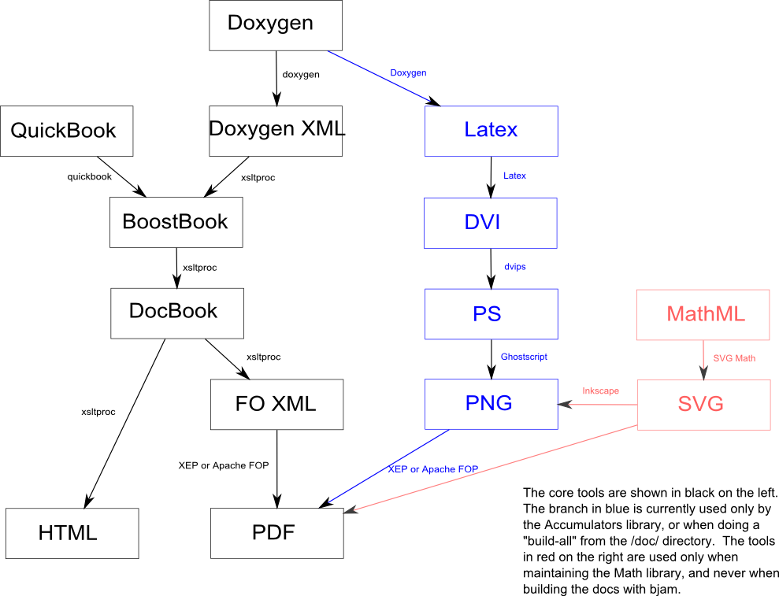

Much of the boost documentation is generated using a collection of documentation tools which make it easier to write documentation in the boost style, and give a consistent look and feel. Setting up and configuring these tools can be tricky, but once everything is in place, it's mostly quite easy to use. There's no requirement to use any of this, but feedback on the documentation generated with these tools is generally positive.
The diagram below illustrates the way the various documentation tools fit together. Note that you don't have to use all of this, and the process is automated using Boost.Build, but having a rough understanding of the build process will help understand the tools better.

Last revised: March 02, 2013 at 19:20:45 GMT |